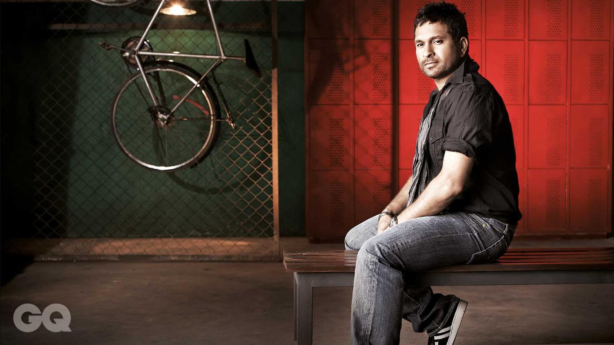

Sachin Tendulkar
God of Cricket 1987 to 2013

Sachin Tendulkar in a photoshoot
- 1973- Born on 24 April,1973 in Mumbai,Maharashtra.
- 1989- He took up cricket at age of eleven, and made his international test debute against Pakishtan at Karachi on 15th November at age of Sixteen.He represented Mumbai and India close to 24-Years.
- 1994- Tendulkar received the Arjuna Award in 1994 for his outstanding sporting achievement.
- 1997- Tendulkar received the Rajeev Gandhi Khel Ratna for his outstanding sporting achievement.
- 1999- He recieved India's highest sporting honour Padma Shree this year.
- 2001- Became first batsman to complete 10000 runs in One-Day International Cricket in 259 innings.
- 2002- Halfway through his career, Wisden Cricketers' Almanack ranked him the second greatest Test batsman of all time, behind Don Bradman, and the second greatest ODI batsman of all time, behind Viv Richards.
- 2010- He also won the 2010 Sir Garfield Sobers Trophy for cricketer of the year at the ICC awards. Time magazine included Sachin in its annual Time 100 list as one of the "Most Influential People in the World".
- 2011- This was the most lucky year for him, he won the world cup for the country which held in his own country.
- 2012- In December 2012, Tendulkar announced his retirement from ODIs.
- 2013- He retired from Twenty20 cricket in October 2013[30] and subsequently retired from all forms of cricket on 16 November 2013 after playing his 200th Test match, against the West Indies in Mumbai's Wankhede Stadium.
- Score- He played total 664 innings in International Cricket and scored 34,357 runs.
Here is the timeline of Sachin Tendulkar :
"Borlaug's life and achievement are testimony to the far-reaching contribution that one man's towering intellect, persistence and scientific vision can make to human peace and progress."
-- Indian Prime Minister Manmohan Singh